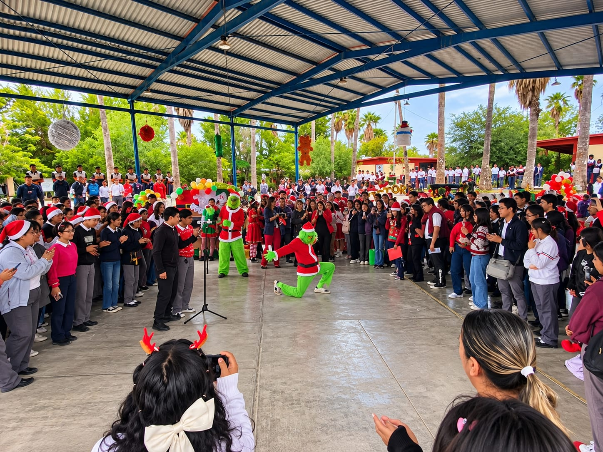
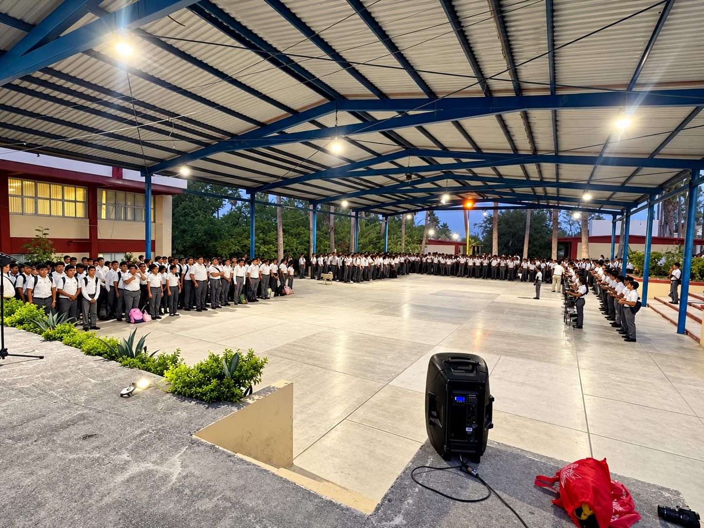
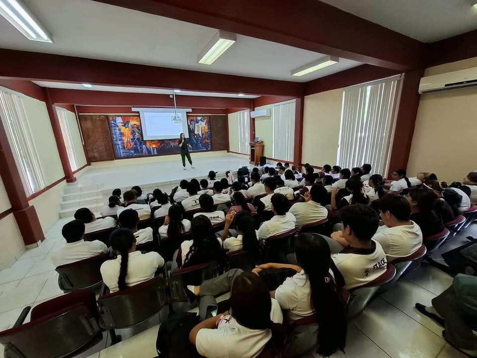

Cultural
Festivales escolares
Actividades que reúnen a la comunidad educativa mediante presentaciones, expresiones artísticas y momentos de convivencia.
Fecha: por confirmarUn espacio para compartir las actividades académicas, culturales y educativas que fortalecen la convivencia y el aprendizaje de nuestra comunidad estudiantil.
Los eventos escolares permiten desarrollar habilidades, compartir conocimientos, fomentar el compañerismo y participar en experiencias que complementan la formación académica y técnica.

Actividades que reúnen a la comunidad educativa mediante presentaciones, expresiones artísticas y momentos de convivencia.
Fecha: por confirmar
Espacios para promover el respeto, la participación y el reconocimiento de las fechas importantes de nuestra historia.
Fecha: por confirmar
Exposiciones en las que el alumnado puede comunicar sus ideas, demostrar lo aprendido y compartir el resultado de sus trabajos.
Fecha: por confirmar
Actividades formativas que pueden acercar a los estudiantes a nuevos conocimientos, herramientas y experiencias profesionales.
Fecha: por confirmar
La participación en grupos y actividades escolares favorece la disciplina, el trabajo en equipo y el sentido de pertenencia.
Fecha: por confirmar
Las ferias y muestras educativas pueden convertirse en oportunidades para presentar proyectos, explorar ideas y aprender en equipo.
Fecha: por confirmarAdemás de complementar las clases, las actividades escolares ofrecen oportunidades para fortalecer la comunicación, la creatividad, la responsabilidad y la colaboración entre estudiantes.
La participación en conferencias, talleres y eventos también puede ayudar a descubrir nuevos intereses y desarrollar habilidades útiles para el futuro.